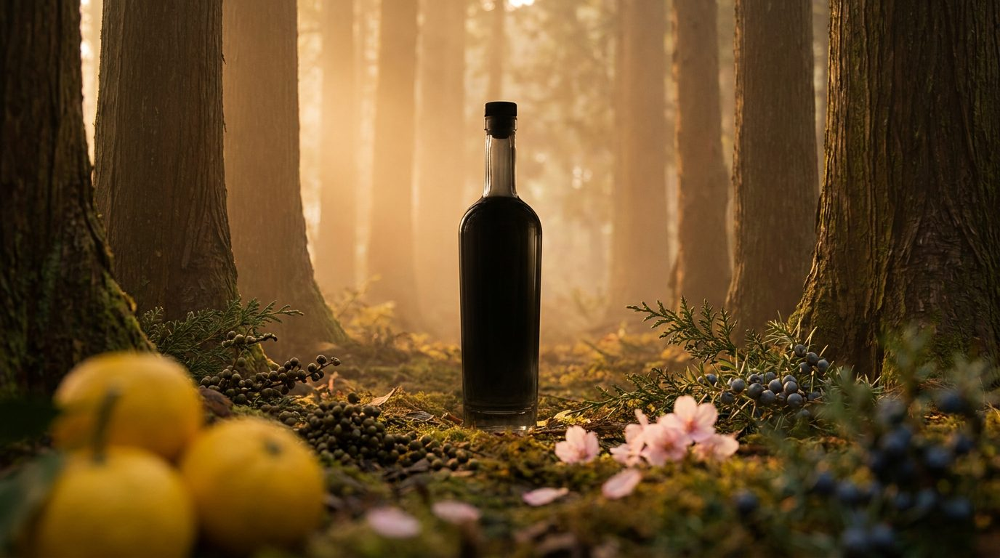

クラフトジンとは？
初心者向け完全ガイド

スピリッツとしてのジンの定義、EU規則 2019/787 が定める4カテゴリ、ロンドンドライから現代のコンテンポラリースタイルまでの5つの主要スタイル、17世紀オランダ起源から英国「ジンクレイズ」を経て2010年代の世界クラフトジンブームと2016年「季の美」から始まったジャパニーズクラフトジンの現在地まで。ジュニパー以外のボタニカル、蒸留方法、初心者の選び方、FAQまでを一次ソースに基づき網羅します。クラフトジンの世界に足を踏み入れる最初の1冊として。
最終更新: 2026年5月9日 ／ 出典: EU Regulation 2019/787、国税庁、The Gin Guild、Difford's Guide、World Gin Awards、日本ジン協会、各蒸溜所公式サイト
1. ジンとは何か ─ スピリッツの中での位置づけ
ジン（Gin）は、ジュニパーベリー（西洋ネズの実）を主要な香味原料とする蒸留酒です。蒸留酒は「スピリッツ」とも呼ばれ、ビールやワインのような醸造酒を蒸留してアルコール度数を高めた飲料の総称です。
世界の主要スピリッツとの違い
世界の主要な蒸留酒を並べると、ジンの位置がよく見えてきます。
| スピリッツ | 主な原料 | 代表的な特徴 |
|---|---|---|
| ウイスキー | 大麦・トウモロコシ等の穀物 | 木樽熟成で琥珀色。3年以上の熟成が一般的 |
| ジン | 穀物由来の中性スピリッツ＋ボタニカル | ジュニパーが主役の香り。原則として無色透明、樽熟成は必須でない |
| ウォッカ | 穀物・じゃがいも | 無色・無味に近い純度。香味付けせず濾過で純化 |
| ラム | サトウキビ | カリブ発祥。ホワイト〜ダークまで熟成度に幅 |
| テキーラ | アガベ（リュウゼツラン） | メキシコ原産。原料のアガベ感が個性 |
| ブランデー | ぶどう・果実 | ワインや果実酒を蒸留。樽熟成で深い色合い |
ジンの最大の特徴は、ベースとなる中性スピリッツにジュニパーベリーを中心とした植物原料（ボタニカル）の香りを移すという構造にあります。木樽で何年も寝かせるウイスキーやブランデーとは異なり、ジンは熟成を必須としません。蒸留してすぐに瓶詰めできるため、製造のハードルが比較的低く、結果としてクラフトの動きが世界中で広がりやすかったジャンルでもあります。
「ベース＋香り付け＋希釈」の3工程
ジン造りの基本構造は驚くほどシンプルです。次の3工程で説明できます。
- ① ベーススピリッツの準備：穀物（小麦・大麦・トウモロコシ等）の発酵醪を連続式蒸留機で蒸留し、純度の高い中性スピリッツを得る。EU規則上「Distilled Gin」を名乗るには96%以上の中性スピリッツが必要。
- ② ボタニカルによる香り付け：ジュニパーベリーをはじめとするボタニカルから香気成分を抽出。浸漬法（マセレーション）・ベイパーインフュージョン（蒸気抽出）・減圧蒸留などの手法を使い分ける。
- ③ 希釈・瓶詰め：軟水で37.5%以上の出荷度数まで割り戻して瓶詰め。樽熟成は基本的に行わない（樽熟成ジンも一部存在する）。
このシンプルさこそ、世界中の蒸溜所が競って参入する理由です。ウイスキーは樽熟成に最低数年を必要としますが、ジンは「仕込んで蒸留して瓶詰め」までを1〜2週間で完了できることすらあります。新規プレイヤーが個性で勝負しやすい、まさに「クラフト向きのスピリッツ」なのです。
2. ジンの法的定義 ─ EU規則と日本の酒税法
「ジンを名乗るためのルール」は国・地域ごとに異なります。世界的に最も参照されているのが、欧州連合のRegulation (EU) 2019/787（スピリッツ飲料規則）です。
EU規則 ─ ジン関連スピリッツの4分類
EU規則は「ジン」を含む関連カテゴリを次の4つに整理しています。
| カテゴリ | 最低度数 | ジュニパー要件 | 主な特徴 |
|---|---|---|---|
| Juniper-flavoured spirit drinks（Cat 19） | 30% | 必要（J. communis または J. oxycedrus） | ジュニパー風味のスピリッツ全般。シュナップス等を含む広いカテゴリ |
| Gin（Cat 20） | 37.5% | 主体（predominant）であること | 天然・準天然の香味料の使用が認められる。ベースは農産物由来エチルアルコールを使用 |
| Distilled Gin（Cat 21） | 37.5% | 主体、かつ蒸留時にボタニカル存在下 | 96%以上の中性スピリッツとボタニカルを再蒸留して製造 |
| London Gin（Cat 22） | 37.5% | 主体、すべてが蒸留時のみで付与 | 着色料・香味料の後添加禁止。甘味料は最終製品1Lあたり0.1g以下 |
覚えておきたいのは次の3点です。
- 「Gin」と名乗るには最低37.5%のアルコール度数が必要（Juniper-flavoured spirit drinksは30%以上で別カテゴリ）。
- ジュニパーが「主体（predominant）」であること。柚子や桜が華やかに香っていても、ジュニパーの存在感がなければ法的にはジンと呼べない、というのがEUの考え方です。
- もっとも厳格なのが「London Gin」（いわゆるロンドン・ドライ・ジン）。蒸留時にすべての風味付けを終える必要があり、後から香味料・着色料を加えることは一切認められていません。「Dry」を名乗るには甘味料が0.1g/L以下に抑えられている必要があります。
日本の酒税法 ─ 「ジン」というカテゴリは存在しない
では日本ではジンはどう扱われているのでしょうか。結論から言うと、日本の酒税法には「ジン」という独立した品目カテゴリは存在しません。
国税庁の「酒税法における酒類の分類及び定義」によれば、酒類は次の4つの大区分に分けられます。
- 発泡性酒類（ビール、発泡酒等）
- 醸造酒類（清酒、ワイン等）
- 蒸留酒類（連続式蒸留焼酎、単式蒸留焼酎、ウイスキー、ブランデー、原料用アルコール、スピリッツ）
- 混成酒類（リキュール、みりん等）
このうち、蒸留酒類のなかで他のいずれにも該当しない酒類で、エキス分が2度未満のものが「スピリッツ」に分類されます。ジン・ウォッカ・ラム・テキーラはすべてこの「スピリッツ」に含まれることになります。
つまり、日本では「ジンを名乗るためのジュニパー必須要件」も「最低アルコール度数の規定」もないのです。法的には、何のボタニカルを使っていても、極端な話アルコール度数20%でも、エキス分が2度未満なら「スピリッツ」として販売できます。
ただし実態としては、日本のクラフトジン蒸溜所はほぼ例外なくEU規則の基準（ジュニパー主体・37.5%以上）に自主的に準拠しています。「ジン」と名乗って国際的に通用するためには、世界共通言語であるEU基準を満たすことが現実的なスタンダードになっているからです。実際、Gin-DBが一次ソースで確認した日本の主要ジン銘柄はすべて37.5%以上で、多くは45%〜57%の高アルコール度数に設定されています（例：ohoro GIN Standard 47%、白兎プレミアム 47%、ROKU 47%、9148 #0303 NAVY STRENGTH 57%）。
出典: EU Regulation 2019/787, Annex I（EUR-Lex）、The Gin Guild "What is Gin?"、国税庁「酒税法における酒類の分類及び定義」、国税庁 酒税法基本通達 第3条
3. 「クラフトジン」の正体 ─ 法的定義はない
ここで重要な事実を1つ。「クラフトジン（Craft Gin）」という言葉に法的な定義はありません。EU規則にも、英国の法律にも、日本の酒税法にも該当条項は存在せず、英国の業界団体 The Gin Guild も公式に「クラフトジンの法的定義はない」と整理しています。
業界が共有する「クラフトジン」の暗黙の特徴
これは2000年代以降のクラフトビール運動から派生した呼称です。法的な裏付けはなくても、業界では概ね次のような特徴を備えたジンを「クラフトジン」と呼ぶ傾向があります。
- 小規模蒸溜所での生産（年産量に明確な基準はない）
- 独立系の運営（大手酒類メーカーの傘下ではない、または個別ブランドとして独立した方針を持つ）
- 個性的なボタニカル選定（地元産素材や独自レシピへのこだわり）
- 蒸溜所のストーリー性（職人的なクラフトマンシップを打ち出す）
- 蒸溜から瓶詰めまでの一貫生産（OEMや外注ではなく自社で完結）
「年産○本以下がクラフト」という基準は存在しない
米国で時折議論される「Craft Distillery=年産10万プルーフガロン以下」のような曖昧な基準はありますが、世界共通ルールとしては成立していません。サントリーのROKUのような大手ブランドが「ジャパニーズクラフトジン」を名乗ることもあれば、岐阜の辰巳蒸溜所（屋号アルケミエ）のように2017年に当時30歳の蒸溜家・辰巳祥平氏がほぼ単独で立ち上げたごく小規模な独立蒸溜所もクラフトジンを名乗ります。
つまり「クラフト」は法的カテゴリではなく、生産者の姿勢を示す呼称と理解しておくのが現実的です。
スーパーマーケットジンとクラフトジンの実務的な見分け方
厳密な定義はないものの、スーパーやコンビニで売られている大量生産系の安価なジン（700mlで1,500円前後）と、いわゆる「クラフトジン」（700mlで概ね3,000円〜10,000円超）は、実務的には次のように見分けられます。
| 観点 | 大量生産ジン | クラフトジン |
|---|---|---|
| 価格帯（700ml） | 1,000〜2,000円 | 3,000〜10,000円超 |
| ボタニカル数 | 5〜10種程度・産地非公開が多い | 10〜20種以上、産地まで公表する例多数 |
| 蒸留器 | 大型カラム＋大型ポット | 小型ポット（200〜1,000L程度）が主 |
| ロット感 | 年間数百万本規模 | 限定リリース、ボトル番号入りも |
| 物語性 | 製品スペック中心 | 蒸溜所・蒸溜家・地域の物語が前面に |
言い換えれば、クラフトジンは「誰が、どこで、なぜそのレシピで作ったか」が読める酒です。1本のボトルが、土地・歴史・人の物語を運んでくる。これが大量生産品にはない魅力の根幹です。
4. ジンの5大スタイル
クラフトジンの世界に入ると、ボトルの背面にこんな表記をよく見かけます。「London Dry Gin」「Old Tom Gin」「Plymouth Gin」「Contemporary Style Gin」「Japanese Gin」──いずれもジンの「スタイル」を示す言葉です。法的定義があるもの、業界慣習で定着しているもの、地域呼称、コンテストの分類…と性質はバラバラですが、味の方向性を理解する上で5つを押さえておくと一気に視野が広がります。
① ロンドン・ドライ・ジン（London Dry Gin）
EU規則 Cat 22 で唯一厳密な法的定義を持つスタイル。蒸留時にすべての風味付けを終え、後から香味料・着色料を加えることは禁じられ、甘味料は最終製品1Lあたり0.1g以下に抑える必要があります。ジュニパーがくっきり立った辛口が特徴で、ジントニックやマティーニといった古典カクテルの王道ベースです。
「ロンドン」と名前が付いていますが、製造地は世界中どこでも構いません。京都蒸溜所「季の美 京都ドライジン」も、長野・野沢温泉蒸留所「Classic Dry Gin」も、れっきとしたロンドン・ドライ・ジン規格に準拠した日本のジンです。
② オールドトム・ジン（Old Tom Gin）
18〜19世紀の英国で広く飲まれていた、わずかに甘いスタイルのジン。20世紀にロンドン・ドライが主流になる過程で一度ほぼ絶滅状態になりましたが、2000年代の古典カクテル復興運動で再注目され、現代では一部の蒸溜所が復刻しています。
「Tom Collins」「Martinez」など、古典バーで指名されるカクテルにオールドトムが合うのは、当時のレシピがオールドトム前提で作られていたからです。クラフトジンに慣れてきたら、次の挑戦として味わう価値があります。
③ プリマス・ジン（Plymouth Gin）
かつてはEU内で地理的表示（GI）保護を受けていた特別な地域呼称で、英国デヴォン州プリマスでのみ製造を許されたスタイル。2014年にこの保護指定は失効しましたが、Plymouth Distillery（1793年創業、英国現存最古のジン蒸溜所のひとつ）が引き続きこのスタイルを定義する存在として機能しています。ロンドン・ドライよりやや柔らかく、土っぽい甘みを感じる仕上がりが特徴で、ガーニッシュにオレンジを合わせる伝統があります。
④ コンテンポラリー・スタイル・ジン（Contemporary Style Gin）
2010年代以降に台頭した「ジュニパーは主体のままに、他のボタニカルにも光を当てる」新潮流。Hendrick's（ローズ・きゅうり）が先駆け、Monkey 47（黒森47種ボタニカル）、Gin Mare（地中海ハーブ）などが代表格。法的定義はありませんが、World Gin Awardsでは「Contemporary Style Gin」が独立した審査部門として設けられており、ボタニカル設計の自由度が高い分、蒸溜所のクリエイティビティが最も問われるスタイルです。
2025年のWorld Gin Awardsで Contemporary Style Gin部門の世界最高賞を受賞したのが、鳥取・松井酒造の白兎プレミアムでした。日本のクラフトジンが世界の現代ジン潮流の最前線に立った瞬間です。
⑤ ジャパニーズジン（Japanese Gin）
厳密にはEU規則上の独立カテゴリではなく、業界・コンテスト・市場が使い始めた地域呼称です。明確な定義はありませんが、共通する特徴として次の3点が挙げられます。
- 和素材ボタニカルの活用（柚子・山椒・玉露・煎茶・桜・檜・黒文字・紫蘇・笹など）
- 米焼酎・酒粕焼酎・日本酒系などのベーススピリッツが用いられる場合がある（必須ではない）
- 地域固有の素材を物語に組み込む傾向が強い（鹿児島の辺塚橙、北海道のヤチヤナギ、広島のハマゴウ等）
World Gin Awardsでは2024年・2025年と日本勢が異なる部門で2年連続の世界最高賞を獲得しており（後述）、「ジャパニーズジン」は世界のジンメディアでも独立した語彙として定着しつつあります。
5. ジンの世界史 ─ オランダ起源から「ジンクレイズ」へ
ジンの源流は17世紀のオランダにあります。歴史を駆け足で追うと、現代クラフトジンが背負う背景が立体的に見えてきます。
17世紀：オランダの「ジュネヴァ」がすべての始まり
16世紀末〜17世紀初頭のオランダ／フランドル地域で、麦芽を主原料にした穀物蒸留酒に、利尿作用や解熱の薬効があるとされたジュニパーベリーを加えた「ジュネヴァ（Genever / Jenever）」が普及しました。語源はジュニパーを意味するオランダ語 "jeneverbes" やフランス語 "genièvre"。当初は薬用酒として、やがて嗜好品として消費が広がります。
The Gin Guildや英国のジン研究文献では、ジュネヴァは現代ジンの直接の祖と位置づけられています。Genever→Geneva→Gin と短縮されて英国に伝わったと多くの資料が記しています。
18世紀：英国「ジンクレイズ」(Gin Craze)
1688年の名誉革命でオランダのウィリアム3世が英国王に即位し、ジン（ジュネヴァ）が英国に持ち込まれます。当時のロンドン下層階級の間で爆発的に消費が拡大し、社会問題化したのが「ジンクレイズ（ジン狂時代）」です。1751年に画家ウィリアム・ホガースが描いた『ジン横丁（Gin Lane）』は、社会の荒廃を風刺した版画として歴史教科書にも登場します。
政府は1729年・1736年・1751年のジン法（Gin Acts）で課税・販売規制を強化。これがやがて低品質ジンを駆逐し、ジン産業を「規制された専門産業」へ移行させる転換点となりました。
19世紀：連続式蒸留機が「ロンドン・ドライ・ジン」を生んだ
1830年、Aeneas Coffey が改良した連続式蒸留機（コラム・スチル）が登場。これにより高純度の中性スピリッツが安価に大量生産できるようになり、それまで甘味料でクセを隠していたジンが、よりピュアでドライなスタイルへとシフトします。これが「ロンドン・ドライ・ジン」誕生の技術的背景です。
同時期、英領インドに駐在する英国軍と行政官は、マラリア予防のキニーネ（苦み）をジンと割って飲むようになり、現代のジントニックの原型が誕生しました。1870年にSchweppes社が世界初の "Indian Tonic Water" を発売し、ジントニック文化が広がる土台が整います。
20世紀：禁酒法時代のアメリカと、戦後のヨーロッパ
米国の禁酒法（1920–1933）下で密造ジン「バスタブジン」が横行する一方、亡命したアメリカ人バーテンダーがロンドンに渡り、現代マティーニやネグローニといった古典カクテルの基礎が固まりました。戦後はBeefeater、Tanqueray、Bombay Sapphireなど大手ブランドが世界のジン市場を支配します。
日本における国産ジンの黎明 ─ 1936年「ヘルメスジン」
国産ジンの歴史は意外に古く、1936年に壽屋（現サントリー）が「ヘルメスジン」を発売しています。これがサントリーのアーカイブで確認できる最古の国産ジン。「日本初のジン」を探すならばこちらが正解で、後述する「日本初のジン専門蒸溜所」（京都蒸溜所、2014年設立）とは別の話として整理しておく必要があります。
戦後はサントリー・ニッカ・キリンといった大手が国産ジンを継続的に発売しましたが、輸入物の影に隠れがちで、日本市場でのジンは長らく「マイナーなスピリッツ」の位置づけでした。状況が一変するのは、後述する2010年代後半のクラフトジンブーム到来以降です。
6. 2010年代クラフトジンブームの背景
20世紀後半まで「中年男性が飲む辛口の酒」というイメージが固定化していたジンは、2010年代に入って世界的に劇的な復活を遂げます。なぜか。3つの構造的な要因が絡み合っています。
要因① 米国・英国のクラフトディスティラリー法整備
米国では2000年代後半から各州が小規模蒸溜免許の取得を緩和。英国では2009年にThe Gin Guildが設立され、2010年代に新規ジン蒸溜所が相次ぎ立ち上がりました。Sipsmith（2009、ロンドン）、Hendrick's（1999、英スコットランド・Girvan）、Monkey 47（2008、独・黒森）など、現代クラフトジンを象徴するブランドがこの時期に動き出します。
要因② カクテルバー・ルネサンス
2000年代後半〜2010年代に、米国（ニューヨーク／ポートランド）と英国（ロンドン）を中心に「クラシックカクテル復興」「クラフトカクテル」と呼ばれる潮流が起きました。バーテンダーが古典レシピを丁寧に作り直す中で、ジントニック・マティーニ・ネグローニが再び主役に躍り出ます。「カクテルの土台としてのジン」に対する需要が爆発的に増えたのです。
要因③ スペイン「Gin Tonica」現象
2000年代後半、スペイン・カタルーニャ／バスク地方のミシュラン星付き料理店で、シェフたちが厨房にあった大きなワイングラス（コパ・デ・バロン）でジントニックを作り始めたのがきっかけで、ガーニッシュをふんだんに使うスペイン式「Gin Tonica」が大流行。米PUNCH誌などが伝えるこの現象は、世界中のバーシーンに「ジンの楽しみ方をもう一度発明する」気運をもたらしました。
日本上陸 ─ 「2016年」を境にすべてが変わった
これら3つの追い風を受けて、世界のクラフトジンブームは2010年代半ばにピークを迎えます。日本ではやや遅れて2016年を境に状況が一変しました。次のセクションで詳しく見ていきます。
7. ジャパニーズクラフトジン ─ 2016年「季の美」が変えた地図
日本のジン製造史を、起点となるいくつかのトピックで整理します。
2014〜2016年：京都蒸溜所「季の美」が業界を変えた
現在のジャパニーズクラフトジンブームの明確な起点になったのが、2014年設立の京都蒸溜所と、2016年10月発売の「季の美 京都ドライジン」です。京都蒸溜所自身が公式サイトで「日本初となるジン専門の蒸溜所」と明記しているとおり、ジン製造のために設立された日本初の専門蒸溜所として歴史を切り開きました。2017年以降はペルノ・リカール・ジャパンが買収・運営しており、世界市場への流通網も整っています。
季の美 京都ドライジンは11種のボタニカルを「6つのエレメント」（礎・柑・凛・辛・茶・芳）に分け、それぞれ別々に蒸留してから、伏見の名水でブレンドする独自製法を採用しています。玉露・柚子・山椒・木の芽・赤紫蘇・笹など、日本の地理的・文化的個性を全面に押し出した設計が、世界のジン市場に新風を吹き込みました。
2017年：ジャパニーズクラフトジン本格到来の年
2017年は、日本のジン市場にとって決定的な年でした。大手・中堅・個人蒸溜所がそれぞれ動き始め、市場が「点」から「面」へ広がります。
- 2017年3月30日: 本坊酒造「Japanese GIN 和美人」発売（鹿児島・マルス津貫蒸溜所）。柚子・辺塚橙・金柑・けせん（ニードルウッド）・月桃・緑茶・生姜・紫蘇など南九州の素材を11種使用。
- 2017年6月27日: ニッカウヰスキー「ニッカ カフェジン」発売（仙台・宮城峡蒸溜所）。1963年導入のカフェ式連続蒸留機を活かした個性派。柚子・甘夏・かぼす・シークヮーサーの和柑橘4種＋山椒。
- 2017年7月4日: サントリー「ROKU〈六〉」発売（大阪工場）。桜花・桜葉・煎茶・玉露・山椒・柚子の和素材6種＋伝統8種の合計14種ボタニカル。
- 同年6月: 岐阜・辰巳蒸溜所が創業（屋号「アルケミエ」）。当時30歳の蒸溜家・辰巳祥平氏が個人で立ち上げた小規模蒸溜所として、ジン・アブサン・限定リキュールを展開。
2018〜2020年：全国に蒸溜所が広がる
季の美以降、各地に独自素材を活かしたクラフトジン蒸溜所が次々と誕生しています。
- 広島・サクラオB&D（旧中国醸造、創業1918年）が2018年「SAKURAO GIN」発売。広島産9種柑橘＋海外5種の14種構成で、創業100周年の節目に本格参入。
- 北海道・紅櫻蒸溜所（札幌市南区、2018年4月開業）が「9148」ブランドで道産ボタニカルジンを展開。日高昆布・切干大根・干し椎茸・ブルーベリーといった意表をつく素材選定。
- 長野・養命酒製造が2019年3月に「香の森」を発売。クロモジ（黒文字）の細枝を主役に据えた静謐な森のジン。
- 北海道・ニセコ蒸溜所（2019年創業／2021年グランドオープン）が「ohoro GIN」を発売。ヤチヤナギ・ニホンハッカといった北海道の地域性を前面に。
国際的評価 ─ World Gin Awards で日本勢2年連続「世界最高賞」
世界最大級のジンコンテスト World Gin Awards（worldginawards.com）で、2024年・2025年と日本のジンが2年連続で部門別の世界最高賞（World's Best）を獲得しています。
- 2024年: ニセコ蒸溜所「ohoro GIN Standard」が Classic Gin部門 で World's Best
- 2025年: 松井酒造（鳥取県倉吉蒸溜所）「白兎プレミアム」が Contemporary Style Gin部門 で World's Best
注意したいのは、これは「同じ部門で2連覇」したわけではなく、異なる蒸溜所が異なる部門で連続的に世界最高賞を取ったということ。それでもなお、世界のジンコンテストで2年連続して日本のジンが各部門のトップに立ったという事実は、ジャパニーズクラフトジンが「地域のニッチ」から「国際的な主役」に格上げされたことを示しています。受賞史の詳細は受賞ジン年表で確認できます。
蒸溜所数 ─ 国内100以上、Gin-DB調べで92蒸溜所を一次ソース確認済み
日本ジン協会の2023年11月調査によると、国産ジン蒸溜所は100以上、商品数は365に達しています。Gin-DB自身も2026年8月時点で92蒸溜所・219銘柄を公式一次ソースで確認・収録しています。クラフトビールが定着していった2010年代を、ジンが追いかけているような構図と言えます。
出典: 京都蒸溜所「季の美」公式、サントリー ROKU公式、本坊酒造公式、ニセコ蒸溜所公式、松井酒造公式、養命酒製造「香の森」公式、World Gin Awards 公式、日本ジン協会
8. ボタニカルと蒸留方法 ─ 香りの設計
クラフトジンを「香りで楽しむ」段階に進むには、ボタニカルと蒸留方法の基礎を押さえておくと一気に解像度が上がります。深掘りはボタニカル完全図鑑に譲り、ここでは要点だけ整理します。
ジュニパーベリー ─ 絶対王者
ジンの主役は西洋ネズの実、ジュニパーベリー。学名 Juniperus communis L.。EU規則上、ジンを名乗るには「ジュニパーの風味が主体（predominant）」が必須要件です。主産地はマケドニア・イタリア（特にトスカーナ）・セルビア・ボスニアなど。香りの特徴はパイン（松脂）のような清涼感、樹脂質、わずかな柑橘ニュアンスです。
クラシックジンの定番ボタニカル6軸
ジュニパーに加え、伝統的なジンレシピでは次のようなボタニカルが多用されます。
| 分類 | 代表的ボタニカル | 役割 |
|---|---|---|
| コア／ベース | ジュニパーベリー、コリアンダーシード、アンジェリカルート、オリスルート | 骨格作り。アンジェリカは他の香りを束ねる「結合剤」、オリスは香りの定着剤 |
| シトラス | レモンピール、オレンジピール、柚子、夏みかん、ビターオレンジ | 爽やかな柑橘香。トップノートで第一印象を決める |
| ハーバル | コリアンダー、紫蘇、笹、緑茶、カモミール | 緑の清涼感と複雑性 |
| スパイス | カルダモン、カッシア、山椒、生姜、黒胡椒、ナツメグ | 複雑さと余韻、フィニッシュを引き締める |
| フローラル | 桜花、エルダーフラワー、ローズ、ラベンダー | 華やかさを付与 |
| ウッディ／その他 | ヒノキ、黒文字、リコリス、屋久杉、樹皮類 | 深みと甘さ。日本らしさを出す要素 |
日本のクラフトジンが切り開いた和ボタニカル
日本のクラフトジンが世界で評価される最大の理由が、和素材ボタニカルの活用です。各蒸溜所の公式情報で確認できる代表例を挙げます。
- 柚子: 季の美（京都蒸溜所）、ROKU（サントリー）、SAKURAO（サクラオB&D）など多くの蒸溜所で採用
- 玉露・煎茶・緑茶: 季の美、ROKU、SAKURAO（府中緑茶）、和美人（緑茶）で使用。茶葉が持つ旨みとほろ苦さがジンに新しい奥行きをもたらす
- 山椒・木の芽: 季の美、ROKU、和美人、白兎（和山椒）。日本特有の痺れと爽やかさ
- 桜（花・葉）: ROKUで桜花・桜葉ともに使用。SAKURAO（廿日市の桜）でも採用、紅櫻蒸溜所「9148 #0396 SAKURA」も
- 檜（ヒノキ）: 季の美、SAKURAO ORIGINAL（広島産）が採用。樹木の清涼感
- 黒文字（クロモジ）: 養命酒製造「香の森」が主役素材として採用、SAKURAO LIMITEDでも使用
- 紫蘇: 季の美（赤しそ）、SAKURAO（赤・青しそ）、和美人
- ヤチヤナギ: ニセコ蒸溜所「ohoro GIN Standard」（北海道湿原の自生植物）
ボタニカルから日本ジンを探したいときは、ボタニカル逆引きページで素材別に銘柄を絞り込めます。
蒸留方法 ─ 単式蒸留／浸漬／蒸気抽出／減圧蒸留
同じボタニカルを使っても、蒸留方法が違えば仕上がりは大きく変わります。要点だけ。
- 単式蒸留器（ポットスチル）: バッチ単位で動かす。ボタニカルの芳香成分を残しやすく、クラフトジンの主役となる方式。
- 連続式蒸留器（カラムスチル）: 高純度の中性スピリッツ製造に使用。ジンの場合、これでベース酒を作り、ボタニカルとともにポットで再蒸留するのが典型。
- 浸漬法（マセレーション）: 中性スピリッツにボタニカルを直接浸ける。エキス抽出効率が高く、骨太でリッチな味わいに。Beefeaterが代表例（24時間浸漬）。
- ベイパーインフュージョン（蒸気抽出）: 蒸気だけをボタニカルに通し、香気成分のみ抽出。クリーンで繊細、軽やかな仕上がり。Bombay Sapphireが代表例。
- 減圧蒸留: ポンプで蒸留器内の気圧を下げ、アルコールの沸点を25〜40℃前後まで下げる手法。熱に弱いトップノート（柑橘・フローラル）を壊さず抽出できる。京都蒸溜所「季の美」やサントリーROKUで採用。
サントリーは公式に、「桜の繊細な香りはステンレスポットスチルでの減圧蒸留で引き出し、柚子の深い味わいは銅製ポットスチルで通常蒸留する」と明らかにしています。日本のクラフトジン蒸溜所が桜・煎茶・玉露・柚子・山椒といった繊細な和ボタニカルの香りを表現するために減圧蒸留を採用するケースは多く、ジャパニーズクラフトジンの個性を生み出す技術的背景になっています。
9. 初心者のためのクラフトジン選び5ステップ
クラフトジンの世界は深いですが、最初の1本〜数本を選ぶときは、次の5ステップで考えると迷いません。
ステップ1：好きな香りの方向を決める
- シトラス系（柚子、レモン、オレンジ、夏みかん） → 爽やかでジントニック向き。ROKU、SAKURAO ORIGINAL など
- スパイス系（山椒、生姜、黒胡椒） → 食中酒として、ストレートやロックで個性を楽しむ。白兎プレミアム、棘玉 TOGEDAMA など
- フローラル系（桜、エルダーフラワー、ラベンダー） → 華やかで、初心者にも飲みやすい。ROKU、ohoro GIN Limited Edition ラベンダー など
- 森・樹木系（黒文字、ヒノキ、屋久杉） → 静謐な落ち着き、和の世界観。香の森、和美人 The Forest など
- クラシックドライ系（ジュニパー強め） → 王道のジン。マティーニやジントニックの定番に。ohoro GIN Standard、季の美 京都ドライジン
ステップ2：飲み方で選ぶ
- ジントニックを楽しみたい → クラシックドライ系。ROKU、季の美 京都ドライジンが鉄板。詳しい黄金比はジントニック黄金比ガイドを参照。
- マティーニで楽しみたい → 47%以上の高アルコール度数で香り強めの銘柄。詳細はマティーニ完全ガイドを参照。
- ストレート・ロックで香りを味わいたい → 個性派の和ボタニカル系。香の森、ohoro GIN、和美人など
- ギフト・贈答用 → 受賞歴やストーリー性のある銘柄。受賞ジン年表から選ぶのが確実
ステップ3：価格帯で絞る
- 〜3,000円: 日常用エントリー。ROKU 200ml、SAKURAO ORIGINAL（市場実勢¥2,200〜）、白兎-HAKUTO-（700ml ¥1,496税込）
- 3,000〜6,000円: 主役級プレミアム。季の美 京都ドライジン（市場実勢¥4,500〜）、白兎プレミアム（¥3,960税込）、ohoro GIN Standard（¥4,500税別）、ROKU 700ml（¥4,000税抜）、和美人（¥4,400税込）、ニッカ カフェジン（¥4,345参考）
- 6,000円〜: 贈答用・特別な日。和美人 The Forest（¥4,620）、9148 #0101 STANDARD 700ml（¥6,380）、9148 #0303 NAVY STRENGTH（¥8,910）、ohoro GIN Limited Edition（¥5,000）など
ステップ4：度数で選ぶ
初心者ほど度数を気にしませんが、実はジンの40%／45%／47%／57%の差は、味の力強さに直結します。
- 40%前後（白兎-HAKUTO-、サントリー翠など）: ストレートやロックでも飲みやすく、ジントニックも強すぎず家庭向き。
- 45〜47%（季の美、ROKU、ohoro、和美人、白兎プレミアムなど主流帯）: 香りの厚みと飲みやすさのバランスが取れた標準。多くのクラフトジンがこの帯。
- 54〜57%（季の美 勢、9148 NAVY STRENGTHなど）: 「ネイビーストレングス」と呼ばれる高度数帯。マティーニや氷で薄まる飲み方でも香りが負けない。
ステップ5：地域で選ぶ
蒸溜所の所在地が、そのまま使われるボタニカルの個性に直結します。「旅するように」地域でジンを選ぶのも、ジャパニーズクラフトジンの楽しみ方の一つです。
- 北海道：ヤチヤナギ・ニホンハッカ・日高昆布・ラベンダー（ニセコ蒸溜所、紅櫻蒸溜所など）
- 東北：宮城峡の和柑橘4種・山椒（ニッカ宮城峡蒸溜所）
- 京都・関西：玉露・木の芽・赤しそ・笹・檜（京都蒸溜所、サントリー大阪工場）
- 中国・四国：広島産柑橘・桜・ヒノキ・牡蠣殻・鳥取産梨（サクラオB&D、松井酒造）
- 九州：辺塚橙・金柑・けせん・月桃・緑茶・紫蘇（本坊酒造マルス津貫蒸溜所）
※ 価格は2026年5月時点の各蒸溜所公式希望小売価格またはオープン価格時の市場実勢を参考に記載。実勢価格は取扱店により変動します。
10. よくある質問（FAQ）
Q1. ジンとウォッカの違いは？
原料の処理は途中まで同じで、どちらも穀物などから連続式蒸留で高純度の中性スピリッツを作ります。違いは「ボタニカルで香り付けするかどうか」。ウォッカは活性炭などで濾過して無味無臭に近づけるのに対し、ジンはボタニカル（特にジュニパーベリー）の香りを移します。
Q2. ジンに賞味期限はある？
40%前後の高アルコール度数のため、未開封なら事実上の劣化はほぼ起こらないとされます。ただし開封後は香り（特にトップノート）が徐々に飛ぶため、3〜6ヶ月程度で飲みきるのが理想。直射日光・高温多湿を避け、立てて保存します。
Q3. クラフトジンとプレミアムジンは違うの？
明確な定義の違いはありません。「プレミアム」は価格帯やマーケティング上の格付けを示す呼称で、「クラフト」は生産規模やストーリー性を示す呼称。両者を兼ね備えた銘柄も多く、Hendrick'sやBombay Sapphireのように大手系列でありながらクラフト的訴求をする銘柄もあります。
Q4. 国産クラフトジンはどこで買える？
大手百貨店・酒販専門店・蒸溜所公式オンラインショップ・楽天市場・Amazonなどで広く取り扱われています。限定エディションは公式通販のみで扱う銘柄も多いため、特定銘柄を狙う場合は公式サイトを最初にチェックするのが確実です。
Q5. 初心者の最初の1本はどれを選べばいい？
万能で外しにくいのはサントリー ROKU〈六〉（700ml ¥4,000税抜、47%）です。和素材6種＋伝統8種のバランスが取れており、ジントニック・ロック・マティーニのいずれでも楽しめます。「日本らしさ」を強く感じたいなら季の美 京都ドライジン、コスト重視で「まずジンに慣れる」なら白兎-HAKUTO-（¥1,496）が選択肢です。
Q6. 「ジャパニーズジン」と「日本産ジン」の違いは？
厳密な法的定義はありません。業界では一般に「日本国内で蒸留され、和素材ボタニカルを用いるジン」を「ジャパニーズジン」と呼ぶ傾向があります。日本ジン協会など業界団体でも独自の定義策定が議論されていますが、現時点では業界共通の確定ルールはなく、各蒸溜所の自主表記です。
Q7. ジンは樽熟成しないの？
多くのジンは樽熟成しないでクリアなまま瓶詰めされます。一方で、近年は「Aged Gin」「Reserve Gin」と呼ばれる樽熟成ジンのジャンルも一部の蒸溜所で展開されており、京都蒸溜所「季の美 エディションK／G」、辰巳蒸溜所「樽熟成 Demon ORANGE」などが代表例です。樽熟成によりジンに琥珀色とまろやかな甘みが加わります。
Q8. ジントニック以外でクラフトジンの個性を楽しむ飲み方は？
ストレート（常温・冷凍庫キンキン）でボタニカルの香りをじっくり拾う、ロックで氷の溶けに合わせて香りの変化を楽しむ、ジン&ソーダでトニックの甘みを排して純粋にジンの香りに集中する、マティーニでドライベルモットの薄いベールを通してジンの個性を引き出す、など。詳細はマティーニ完全ガイドを参照。
Q9. 蒸溜所見学はできる？
主要なクラフトジン蒸溜所の多くが見学を受け入れています。事前予約制のところが大半で、料金は無料〜2,000円程度。一例：ニセコ蒸溜所（4-11月¥1,500／12-3月¥2,000、所要60分、要予約）、サクラオB&D（DISTILLERY TOUR ¥2,000、所要90分、最大12名、要WEB予約）、本坊酒造マルス津貫蒸溜所（無料・自由見学・所要約30分）など。最新情報は各蒸溜所公式サイトで確認してください。
Q10. ジン選びに迷ったとき、Gin-DBのおすすめの使い方は？
3つの入り口を組み合わせるのが効率的です。① ボタニカル逆引きで「柚子」「山椒」など好きな素材から銘柄を絞る → ② 受賞ジン年表で実績のある銘柄に絞り込む → ③ 蒸溜所一覧から地域・蒸溜所のストーリーを読んで決める。
11. まとめ ─ 「ジュニパー＋自由」が生む奥行き
クラフトジンの本質を一言で表すと、「ジュニパーが主役という1本の縛り」と、「それ以外はすべて自由」という設計思想の組み合わせにあります。
EU規則は最低度数37.5%・ジュニパー主体という枠を定めるだけで、それ以外のボタニカル選定・蒸留方法・割り戻しの水・瓶詰め時の度数調整──すべてを蒸溜所の判断に委ねています。「縛りが少ないから、個性が立つ」のがジンというカテゴリの面白さなのです。
ジャパニーズクラフトジンが2010年代後半から急速に世界の評価を集めたのは、この自由度の中で「日本ならでは」を持ち込めたから。柚子の柑橘香、山椒の痺れ、玉露の旨み、桜葉のほのかな塩味、ヒノキの清涼、黒文字の静謐──いずれも他の国の蒸溜所には真似のできない素材で、ジュニパーという世界共通言語と組み合わせることで、初めて「世界のジンマップに書き込める日本の言葉」になりました。
本記事を読み終えた今、あなたは少なくとも次のことを語れるはずです。
- EU規則上のジン4分類とその違い（特にロンドン・ドライ・ジンの厳格さ）
- 5大スタイル（ロンドンドライ／オールドトム／プリマス／コンテンポラリー／ジャパニーズ）の見分け方
- 17世紀オランダ→18世紀英国「ジンクレイズ」→19世紀「ロンドン・ドライ」→2010年代世界ブーム→2016年「季の美」起点のジャパニーズクラフトジン、という歴史の太い流れ
- 2024年・2025年と日本勢が異なる部門で2年連続「世界最高賞」を獲得した事実とその意味
- 初心者の選び方の5ステップ（香り／飲み方／価格／度数／地域）
あとは、実際に1本を手にとって、グラスに注ぐだけです。クラフトジンの世界へ、ようこそ。
12. 関連リンク
ボタニカル逆引き
柚子・山椒・玉露・桜・黒文字…ボタニカルから日本のジンを探す。219銘柄を一次ソース確認済み
ボタニカル完全図鑑
古典10種＋和ボタニカル10種を学名・主産地・使用蒸溜所まで深掘り
ジントニック黄金比ガイド
1:2〜1:3の業界標準、トニック比較、氷・グラス・ガーニッシュ完全網羅
マティーニ完全ガイド
ドライ／ウェット／ヴェスパー／ギブソンを使い分ける
World Gin Awards 日本受賞史
2024年・2025年に世界最高賞を取った日本のジンを年表で
蒸溜所一覧
北海道から沖縄まで、検証済みのクラフトジン蒸溜所92件
最初の1本に選ばれているクラフトジン
この記事で取り上げた銘柄のうち、国際コンテストの受賞歴があり、公式希望小売価格が確認できているものだけを載せています。編集部の主観による順位づけはしていません。掲載外の銘柄も、記事中のリンクから各銘柄ページを開けば購入先を確認できます。
PR ／ アフィリエイトリンクを含みます。